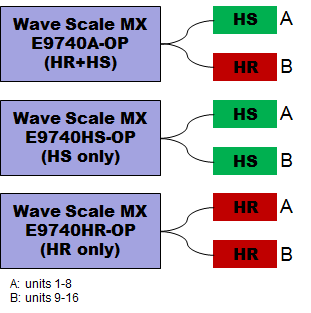
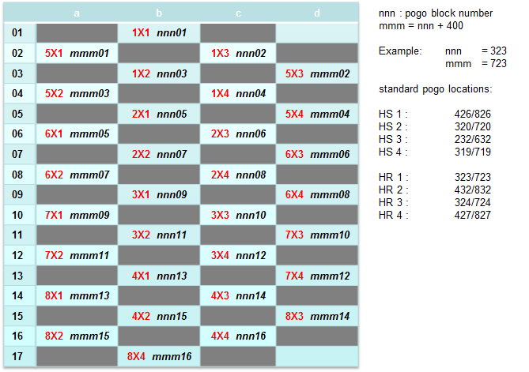
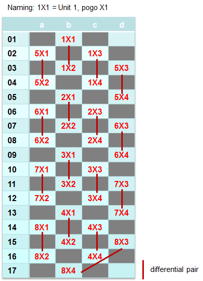
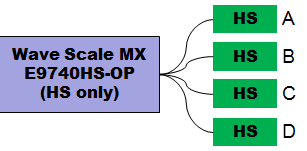
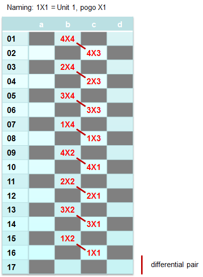

Wave Scale MX pogo pin assignment and model file configuration
Wave Scale MX (WSMX) is the mixed-signal instrument for SmarTest 8 that runs on a V93000 EXA Scale system or on a V93000 Smart Scale system. A WSMX card provides 16 Arbitrary Waveform Generators (AWGs) and 16 Digitizers that can be connected either single-ended or differential. The pogo blocks of the Wave Scale MX card are split into high speed (HS) and high resolution (HR), meaning that there are separate standard locations for the HS and HR units.
| Supported V93000 systems : EXA Scale (SmarTest 8), Smart Scale (SmarTest 8) |
There are two pogo pin assemblies available to connect the Wave Scale MX card to the pogo blocks on the test head:
High-density pogo pin assembly (2x32 pins)
- In case of the E9740A/B-OP card variant, one pogo block provides access to eight HR units, the other one provides access to eight HS units.
- In case of the E9740HS/HSB-OP card variant, the two pogo blocks are fully identical and each one provides access to eight HS units.
- In case of the E9740HR-OP card variant, the two pogo blocks are fully identical and each one provides access to eight HR units.
- Pogo blocks (high-density)

- Pogo pin mapping (high-density)
-
For the high-density pogo blocks, existing pogo locations have the same name as the naming for the standard-density pogo blocks. The additional pogo pin locations are derived from the neighboring compatible pogo pin location by adding 400. In the pogo block below, the pins marked "nnn" are the compatible pins, and the pins marked "mmm" are the additional high density pins.

- Differential pairs (high-density)
-
The following diagram illustrates the differential pairs of the high-density pogo block A.
For block B, unit numbers 1-8 must correspondingly be replaced with 9-16.

- WSMX card configuration in the model file (high-density pogo cable)
The following is an example of the CARD_CONFIGURATION section in the model file for allocating the high-density pogo blocks for a Wave Scale MX card:
CARD_CONFIGURATION # WSMXA-OP with HD pogo cable slot = 101, HW = WSMX, pogoblocks=HS:(231 631) HR:(232 632), type=HD2x32 # WSMXHS-OP with HD pogo cable slot = 108, HW=WSMX, pogoblocks=HS:(426 826 320 720), type=HD2x32 # WSMXHR-OP with HD pogo cable slot = 101, HW = WSMX, pogoblocks=HR:(231 631 232 632), type=HD2x32
Standard-density compatible pogo pin assembly (4x16 pins)
A standard-density pogo pin assembly requires the pogo cable E9740PSD and provides DUT board compatibility for devices that use E9740HS/HSB-OP. A Wave Scale MX card connects to four pogo blocks with 8 differential signals per pogo block (See, Wave Scale MX hardware overview and Setting up a differential connection for more details). In case of the E9740HS/HSB-OP, the four pogo blocks are fully identical and each one provides access to four HS units.
- Pogo blocks (standard-density)
-

- Pogo pin mapping (standard-density)
-
The following diagram illustrates the standard-density pogo block layout:

- Model file example (standard-density)
This example shows the allocation of four standard compatible pogo blocks "231,431,228,428":
CARD_CONFIGURATION # WSMXHS-OP with SD pogo cable slot = 108, HW = WSMX, pogoblocks=HS:(231 431 228 428)